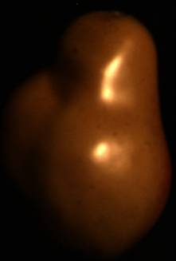
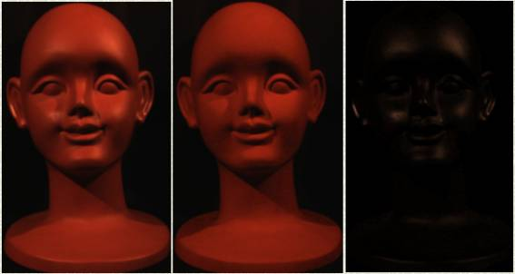

|
[ abstract | experimental results
| paper ]
Abstract:
Many algorithms in computer vision assume diffuse only reflections and deem
specular reflections to be outliers. However, in the real world, the presence
of specular reflections is inevitable, since there are many dielectric
inhomogeneous objects which have both diffuse and specular reflections. To
resolve this problem, we present a method to separate the two reflection
components. The method is principally based on the distribution of
specular and diffuse points in a two-dimensional maximum
chromaticity-intensity space. We found that, by utilizing the space and
known illumination color, the problem of reflection component separation
can be simplified into the problem of identifying diffuse maximum
chromaticity. To be able to identify the diffuse maximum chromaticity
correctly, an analysis of the noise is required, since most real images
suffer from it. Unlike existing methods, the proposed method can separate
the reflection components robustly for any kind of surface roughness and
light direction.
Experimental Results:
[Evaluation | Real Images ]
"Do not use the images in this website for
testing your code.
The images are compressed images
whose brightness might not be linear to the flux of incoming light.”
I. Evaluation:
1.
Head Model
  
(a)
input image (b) diffuse component
(polarizing filters) (c) estimated diffuse component
Comparison of (a) and (b):
  
Comparison of (b) and (c):
  
(d)
error in R-channel
(e) error in
G-channel
(f) error in B-channel
2.
  
(a) input image (b) diffuse component
(polarizing filters) (c) estimated diffuse
component
Comparison of (a) and (b):
  
(d)
difference in
R-channel
(e) difference in G-channel
(f)
difference in B-channel
Comparison of (b) and (c):
  
(g)
difference in
R-channel
(h) difference in
G-channel
(i) difference in B-channel
III.
Real Images:
1. Head Model (a single illumination)


2. Head model lit with multiple light sources:

3. A green plastic object with rough surface:


4. Green sandal (high specularity):


5. Toy (low specularity)


[ abstract | experimental results
| paper ]
|